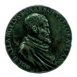
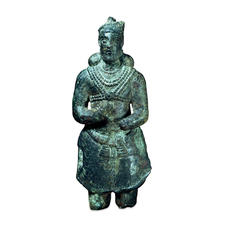
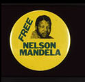
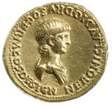
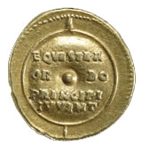
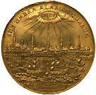

| |
Michelangelo: money and medals
Room 69a
12 January - 25 June 2006
This exhibition
examines Michelangelo's Italy through the medium of coins and medals.
The cities of Florence, Michelangelo's birthplace, and Rome, where he
lived most of his adult life, dominate, but a wider perspective is provided
by the Italian cities he visited, the payments he received, the patrons
who tried to obtain his services, and his increasing fame throughout
Europe. It concludes with a glimpse at the reputation 'the divine Michelangelo'
has enjoyed since his death.
Michelangelo's career
stands at the climax of the development of the Renaissance artist in
status, reputation and, of course, wealth. Money played a hugely important
part in his life and artistic work and he himself had an intense interest
in enhancing his personal and family fortune, sometimes to the point
of sharp practice. His income and wealth were staggering for the standards
of his day, and no contemporary artist could approach him in this: for
example, his salary from Pope Paul III in the 1530s was twelve times
as much as the Emperor Charles V was paying Titian. Famously, however,
he was himself extremely frugal in the manner of his life, so his expenses
were generally very low. His wealth would have been even greater had
he invested his money, but he usually preferred to hoard much of it
in cash.
Medals of the time
bear portraits of many of the famous contemporaries who played an important
role in Michelangelo's life, beginning with his early patron Lorenzo
de' Medici and the fiery preacher Girolamo Savonarola, whom he greatly
admired, and continuing with the various popes, for whom he produced
some of his greatest works, including the Sistine Chapel ceiling and
Last Judgment. Friends whose portraits appear on medals include the
poet Vittoria Colonna - Michelangelo's muse - and the sculptor Leone
Leoni, whose medal of Michelangelo is a rare contemporary portrait of
the great artist. Also shown in the exhibition is Alessandro Cesati's
portrayal of Alexander the Great and the High Priest of Jerusalem, pronounced
by Michelangelo the best medal ever.
The exhibition complements
Michelangelo drawings - closer to the master by illuminating the difficult
and dramatic political circumstances which accompanied the artist's
life, and the important and influential network of patrons, friends
and artists who surrounded him. It also gives insights into the monetary
systems of Michelangelo's world and the economy of a great artist's
life, in acknowledgement of this crucial if neglected aspect of his
career.
Iran
before Islam: Propaganda and Religion 224-652
Exhibition closed
Like
the ancient Persian kings Cyrus, Darius and Xerxes, the Sasanians came
from Parsa (Persis) in southern Iran. They were named after Sasan, a
legendary ancestor. When Ardashir I killed the Parthian king Ardavan
(Artabanus IV) at the battle of Hormizdgan in AD 224, he became the
new king of kings of Iran and the dynasty remained in power until the
arrival of the Arabs in 642.Yazdgird III, the last Sasanian ruler was
murdered in AD 651.
From the beginning of their rule in AD 224, the Sasanian
kings were keen to stress their religious affiliation and their position
as the rightful kings of Iran. They were followers of Zoroastrianism,
an ancient Iranian religion named after the prophet Zarathustra. Rock-reliefs,
coins, silver plates and other small objects always depict the Sasanian
king as a ruler who is protected by divine beings and defeats the enemy
both at home and abroad. He is the rightful possessor of the khvarenah
(modern Persian farr - izadi), the god-Given Glory. With the arrival
of Islam in the middle of the seventh century AD, Sasanian iconography
does not disappear and the idea of divine kingship is adopted by various
Islamic dynasties. In the nineteenth century, the Qajar rulers of Iran
imitate the image of the victorious Sasanian king both on rock- reliefs
and coins.
Wealth
of Africa:
4,000 years of money and trade
Exhibition
closed

Africa has a long
and rich history, spanning ancient kingdoms, colonialism and independence.
This exhibition takes you on a tour of this dynamic continent through
its money, from coins to copper ingots, raffia cloth and cowrie shells.
The story begins with the use of weighed metal in Ancient Egypt, and
with Africa's earliest coins in Cyrenaica (modern-day Libya) in the
sixth century BC. The wealth of Mali, Zimbabwe, and the Swahili Coast
show Africa's power and influence before the arrival of European colonisers
and slave traders, whose legacy still lingers. Links between money and
identity are explored through changes to the coinage during the spread
of Christianity and Islam, and the designing of currencies in the twentieth
century for newly-independent African countries.
Africa
05 programme at the British Museum
Status Symbols: identity and belief on modern badges
Exhibition closed
Visit Microsite
An exploration of the symbolic power of badges and other similar objects
to express identity and belonging, belief and dissent. Status Symbols
includes objects from around the world and from all periods, ranging
from the mass-produced to the individually-crafted; the official to
the subversive; the familiar to the strange. All are powerful statements
of the diverse ways people define themselves and others. As well as
examining attitudes to individual and group identity, the exhibition
explores the origin, use and subversion of symbols, and shows how badges
can create dialogues between conflicting views.
Public
Image: Portraits on coins and medals
Exhibition closed
This exhibition looks at the story of the familiar feature of many of
the coins we use today: the side bearing the head of the head of state
(in the UK this is HM Queen Elizabeth II). Before the widespread use
of photography and the printed image, coins and medals could transmit
an image of a ruler far more widely than any other medium - and were
therefore an important and convenient way to consolidate power and assert
influence. As artefacts, they remain a fascinating record of images
of people who lived in times long past.
The first portrait
coins appeared just before 400 BC in Asia Minor and the display follows
the use of personal images on coins up to the time of Napoleon. The
latter provides an opportunity through the survival of his death mask
to compare his actual face to the official images.
In ancient times
using the head of a ruler on coins was a way for local issuers to gain
credibility by association and in the same way many people wishing to
consolidate their position have copied recognised and accepted styles.
We can see on some of the earliest Greek portrait coins the development
of a feature we still use today, labelling the head with the ruler's
name (and sometimes titles), written around the edge of the coin. The
use of coin portraits soon spread to ancient Iran in the 2nd century
BC and then on to Roman coins. The influence of Roman style coin portraits
can clearly be seen in many Renaissance medals as well as painted and
engraved portraits, for example a print of about 1500 of the school
of Leonardo da Vinci, on show in the exhibition.
We can also see
coins that have allowed rulers to manipulate their image and present
themselves as anything from warrior to god-like, but perhaps coins which
show the ageing of the person depicted are a clue to how concerned some
rulers were to presenting a life-like public image.
Cityscapes:
Panoramic views on
European coins and Medals
Exhibition
closed
The issuing of money
is nowadays regarded as the prerogative of territorial states. Yet, from
the ancient world to modern times many cities have had or claimed free and
sovereign status, and, with this, the right to issue their own coins. This
exhibition focuses on early modern Europe, the 16th to 18th centuries,
when city coinages attained arguably their greatest level of artistic
achievement.
The leaders of these
cities, mostly in what are now Germany, Switzerland and Eastern Europe,
used their coinages to reflect their distinctive character and position,
in a world where they were surrounded by dynastic states, with authority
vested in princes and kings. Their civic pride, the engraving skills
available to them, and the current fashion for physically large coins
encouraged them to display on their coins, in the place of a portrait of a
ruler, a virtual portrait of the city itself: a panoramic view showing its
geographical position, its churches, port, commercial activity, walls and
monuments.
This exhibition is
intended to throw light on this little known aspect of coinage, and to
place it in the context of urban images in other media. |
|

Lead medal of Michelangelo by Leone Leoni, 1560.

Bronze figure of Sasanian King




Gold aurei of Nero, Roman,
mid-1st century AD

Gold Portugalöser (10 ducat piece) showing the Port of Hamburg,
1689 |
|
|
|